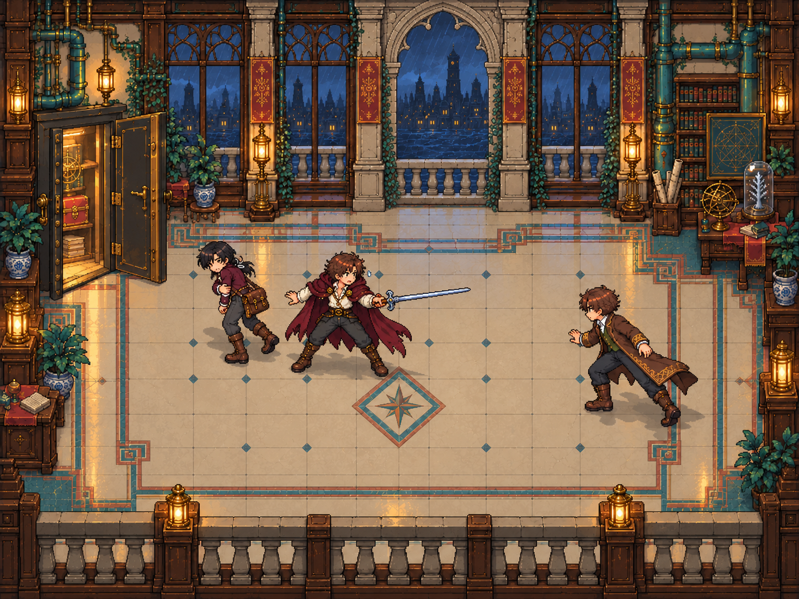
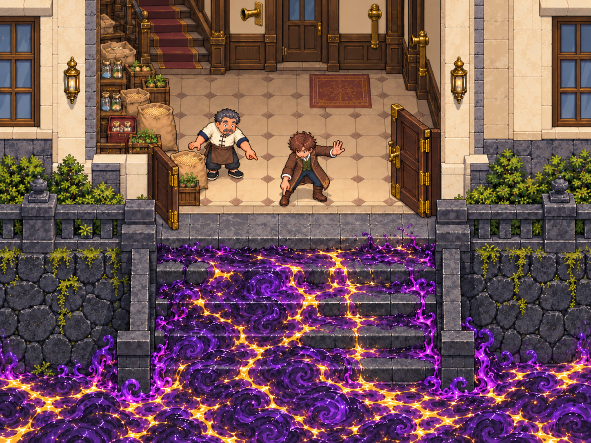

01 / 06 · RPG 目标与分层交付
目标图1448×1086，分区运行图按同一比例发布到1024×768，世界512×384、32格。人物来自新绘透明姿态稿，体高96px、世界缩放0.5；持剑和张臂使用跨格透明画布，脚点单列。完整目标图不进入运行底板。
逐层与逐姿态来源 · 空间与自动动作cue · 独立Astra首轮目标比较
01 先犹疑，再横剑护人
 原场景参考
原场景参考
RPG目标：恢复完整拱窗、雀儿收近左后、紧张护人姿态真实阻拦由诗人身体及举剑碰撞区完成，侦探实际接触后收步，雀儿再走向左门。镜头跟随独立人物，不放大整张背景。地面原稿纹样的source_rect、7/24比例与相位在layout登记；生成投影板不能被称为逐像素原稿。
06 一楼门内发现险情
 最新参考：数米玄武岩基座，源质将近门槛
最新参考：数米玄武岩基座，源质将近门槛
RPG目标：两人看向下方门外源质，同层地坪保持连续门内发现 → 回身示警 → 双手拾取独立货物 → 实际步行退向室内上行楼梯。源质只在门外裁剪范围上升；不再使用上层吊篮或接收平台。
组装与验收边界
无人环境板拆为地面、墙面、侧区、前景栏杆、平台、基座与阶梯固定区域，门扇另有透明遮挡摘取；这些固定构图区块不是通用自动tile。有限姿态组不代表完整多方向步态。角色、道具与源质均为独立节点资产。
本页尚无新游戏截图。取景范围为上述完整RPG画布，待组装后以真实渲染对照；字体、镜头近景、纹样尺度差异、脚点遮挡与碰撞结果由独立Astra后续观察。此页只记录源稿和可组装资源，不给最终验收结论。